مهرجان المدينة المنورة الدولي للعمارة 2026
مهرجان ومعرض نهائي رسمي تنظمه هيئة تطوير منطقة المدينة المنورة، تعرض خلاله الفرق المختارة أعمالها ويُعلن الفائزون في المسابقة الدولية للتصميم.
فعاليات المدينة المنورة القادمة والجارية والمنتهية كما تظهر في EventLive مع مصدر ووقت واضح.
مهرجان ومعرض نهائي رسمي تنظمه هيئة تطوير منطقة المدينة المنورة، تعرض خلاله الفرق المختارة أعمالها ويُعلن الفائزون في المسابقة الدولية للتصميم.
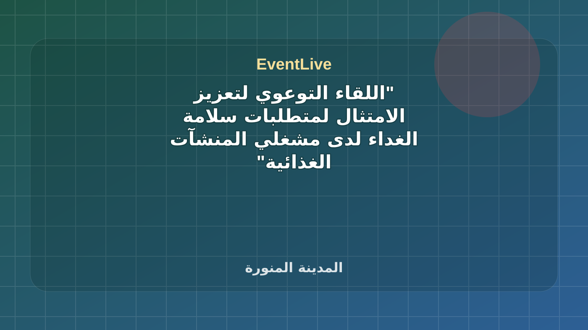
يسر اللجنة الصناعية بـغرفة المدينة دعوتكم لحضور "اللقاء التوعوي لتعزيز الامتثال لمتطلبات سلامة الغداء لدى مشغلي المنشآت الغذائية" الثلاثاء 7\07\ 2026 م غ رفة المدينة المنورة را بط التسجيل: https://survey.porsline.com/s/QAfD3DC4
تفاصيل الحضور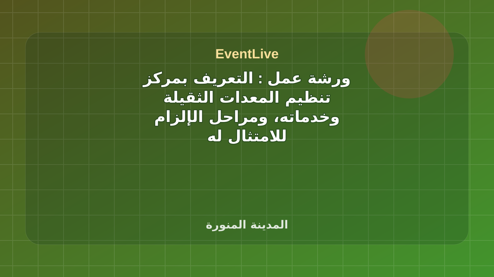
يسر غرفة المدينة المنورة بالتعاون مع الهيئة السعودية للمواصفات والمقاييس والجودة دعوتكم لحضور ورشة عمل بعنوان: التعريف بمركز تنظيم المعدات الثقيلة وخدماته، ومراحل الإلزام للامتثال له الأربعاء 13\5\2026 م 1: 30 مساءً غرف ة المدينة المنورة رابط التسجيل: https://survey.porsline.com/s/SSAAstWc
تفاصيل الحضور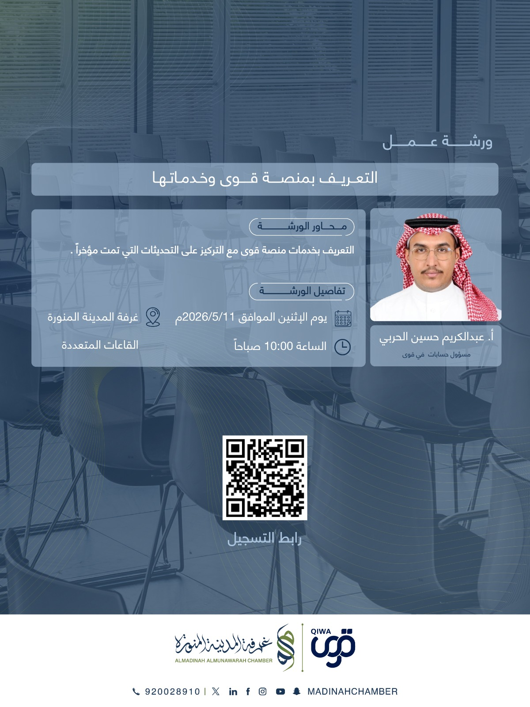
يسر غرفة المدينة المنورة دعوتكم لحضور ورشة عمل بعنوان: التعريف بمنصة قوى وخدماتها الاثنين 11\5\2026 م 10 :00 صباحاً غرف ة المدينة المنورة رابط التسجيل: https://survey.porsline.com/s/dN0KXrE7
تفاصيل الحضور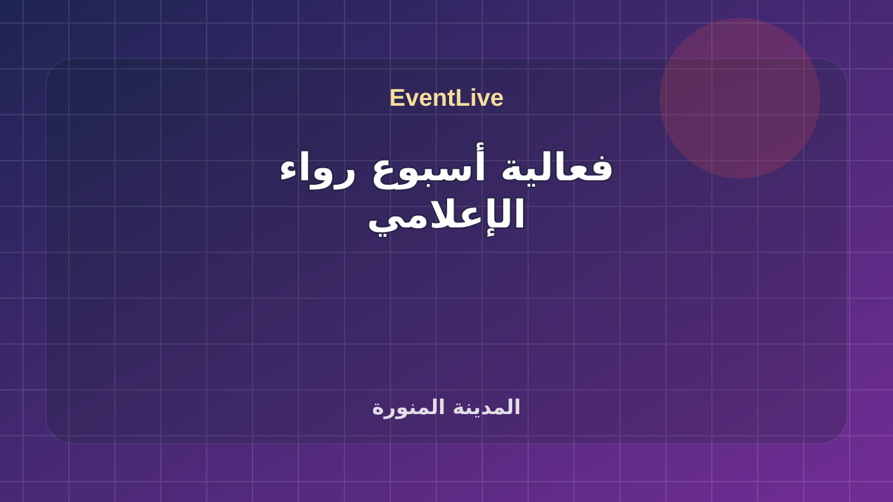
تعلن غرفة المدينة المنورة بالتعاون مع جمعية رواء للإنتاج الإعلامي الرقمي عن النسخة الأولى من فعالية أسبوع رواء الإعلامي ، والتي توفر (120) فرصة تدريبية على يد خبراء متخصصين في مجالات إنتاج المحتوى، والتصميم، والتصوير الفوتوغرافي، والإنتاج، وإدارة وسائل التواصل وإدارة الأزمات الإعلامية. سجل الآن https://event.rdmp.sa/
تفاصيل الحضور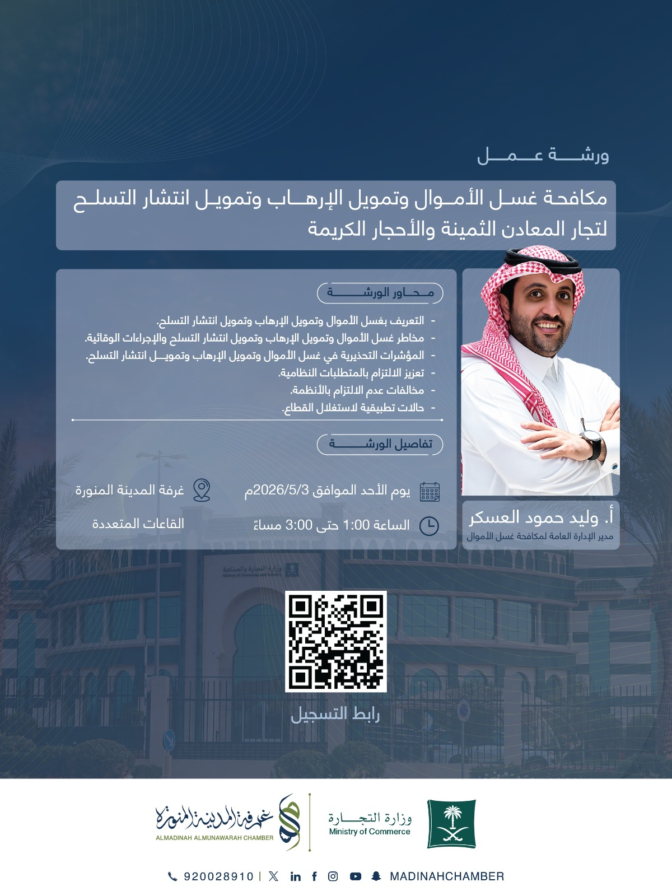
يسر غرفة المدينة المنورة بالتعاون مع وزارة التجارة دعوتكم لحضور ورشة عمل بعنوان: مكافحة غسل الأموال وتمويل الإرهاب وتمويل انتشار التسلح لتجار المعادن الثمينة والأحجار الكريمة الأحد 3\5\2026 م 1: 00 مساءً غرف ة المدينة المنورة رابط التسجيل: https://survey.porsline.com/s/VGLo8jD2
تفاصيل الحضور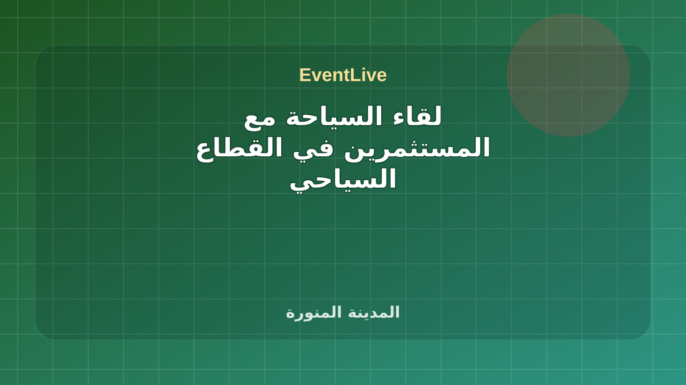
يسر غرفة المدينة المنورة بالتعاون مع وزارة السياحة دعوتكم لحضور لقاء بعنوان: لقاء السياحة مع المستثمرين في القطاع السياحي الأربعاء 29\4\2026 م 4: 30 مساءً غرف ة المدينة المنورة رابط التسجيل: https://survey.porsline.com/s/Ka94uO1H
تفاصيل الحضور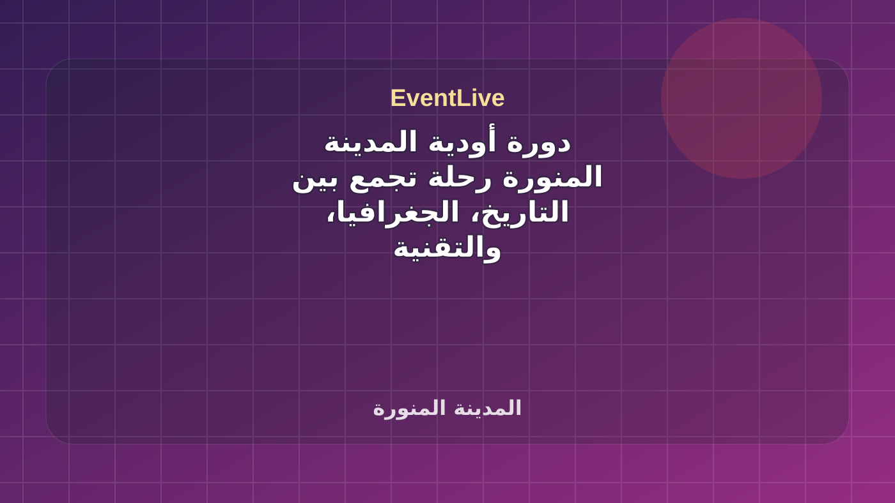
يسر غرفة المدينة المنورة دعوتكم لحضور دورة تدريبية بعنوان: أودية المدينة المنورة رحلة تجمع بين التاريخ، الجغرافيا، والتقنية 28 - 29\4\2026 م 5: 00 مساءً - 9:00 مساءً غرف ة المدينة المنورة رابط التسجيل: https://docs.google.com/forms/d/e/1FAIpQLSf1-SFVpLvnbU6W6CeF2_lazrKoIAfqGBx6ZnDje9Vu-emIRQ/viewform
تفاصيل الحضور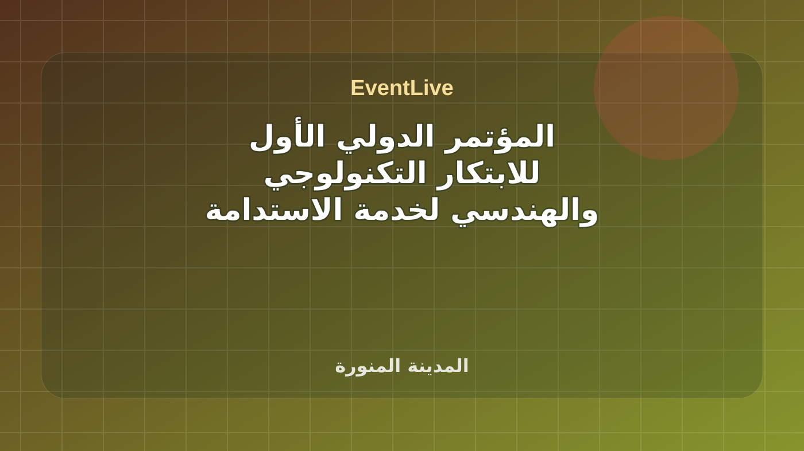
المؤتمر الدولي الأول للابتكار التكنولوجي والهندسي لخدمة الاستدامة فعالية رسمية مدرجة في تقويم الهيئة السعودية للمعارض والمؤتمرات.
تفاصيل الحضور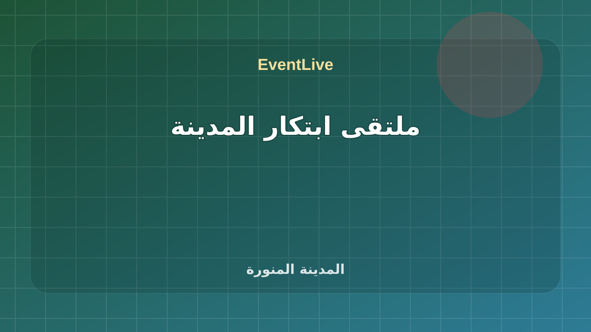
ابتكار يقود… وفرص تُصنع ينطلق #ملتقى_ابتكار_المدينة ضمن فعاليات #أسبوع_الابتكار_2026 في #غرفة_المدينة_المنورة ، ليجمع روّاد الأعمال والمهتمين بالابتكار في مساحة واحدة الأحد 26 /04/ 2026 4 :00 مساءً - 10:00 مساءً غ رفة المدينة المنورة راب ط التسجيل: https://survey.porsline.com/s/TWotydxH
تفاصيل الحضور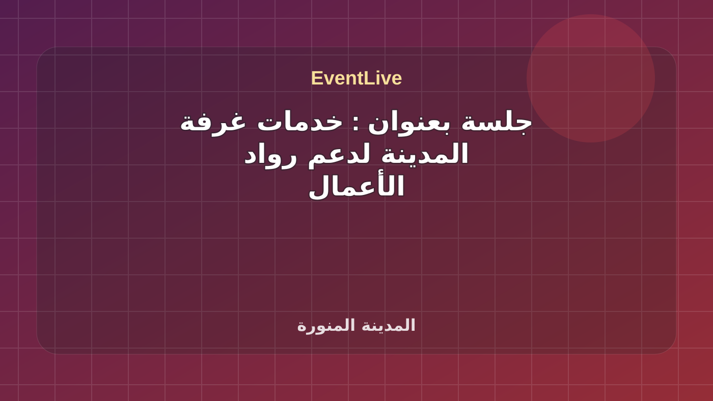
يسر غرفة المدينة المنورة دعوتكم لحضور جلسة بعنوان: خدمات غرفة المدينة لدعم رواد الأعمال الخميس 23\4\ 2026 م 4: 00 مساءً - 5:00 مساءً مرك ز دعم المنشآت - المدينة المنورة
تفاصيل الحضور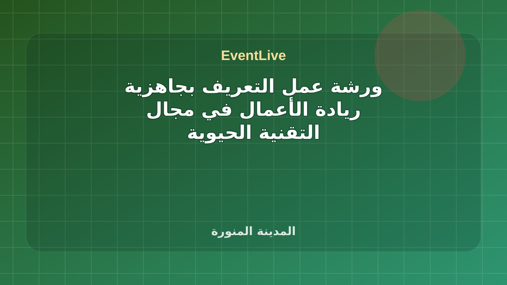
يسر غرفة المدينة المنورة دعوتكم لحضور ورشة عمل بعنوان: للتعريف بجاهزية ريادة الأعمال في مجال التقنية الحيوية الثلاثاء 21\4\ 2026 م 4: 30 مساءً غرف ة المدينة المنورة رابط التسجيل: https://www.monshaat.gov.sa/ar/form/lqt-wbrmj-jwl-mnshat-fy-mntq-lmd
تفاصيل الحضور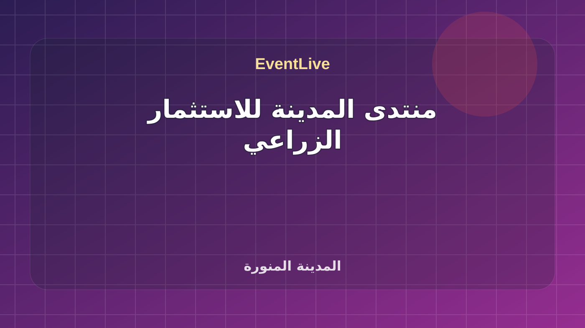
منتدى المدينة للاستثمار الزراعي فعالية رسمية مدرجة في تقويم الهيئة السعودية للمعارض والمؤتمرات. منتدى المدينة للاستثمار الزراعي ضمن مؤتمرات ومنتديات في المدينة المنورة. تبدأ الفعالية ٢٠/٠٤/٢٠٢٦، ١٠:٠٠ ص وتنتهي ٢٢/٠٤/٢٠٢٦، ١٠:٠٠ م حسب البيانات المتاحة. تعرض الصفحة وقت الفعالية وموقعها ومصدرها وروابط التقويم والاتجاهات عند توفرها. المصدر: SCEGA ePortal Events.
تفاصيل الحضور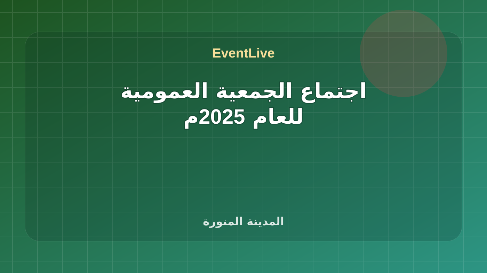
يسر غرفة المدينة المنورة دعوة السادة المشتركين لحضور اجتماع الجمعية العمومية للعام 2025م الثلاثاء 31 مارس 2026م 11:00 صباحاً مق ر غرفة المدينة المنورة للتسجيل والتصويت https://eservices.mcci.org.sa/#/Meetings/Subscription
تفاصيل الحضور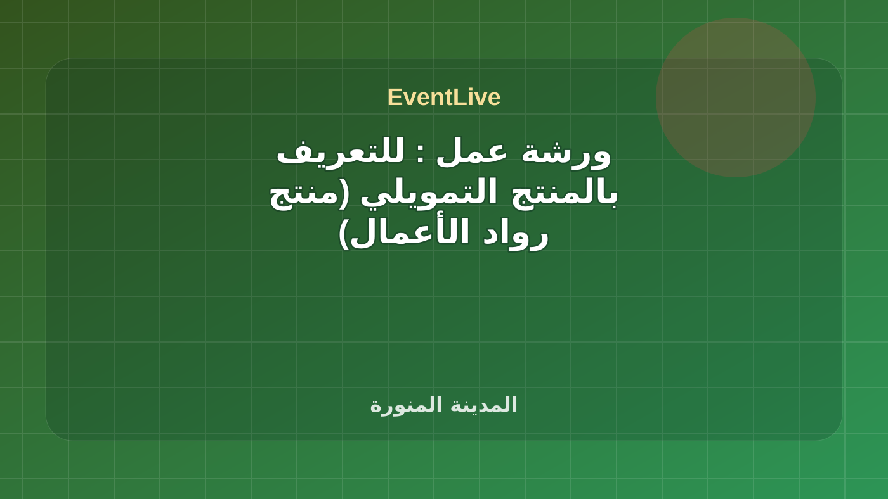
يسر غرفة المدينة المنورة بالتعاون مع بنك التنمية الاجتماعية دعوتكم لحضور ورشة عمل : للتعريف بالمنتج التمويلي (منتج رواد الأعمال) الأحد 1\3\2026 م 10 :00 مساءً غر فة المدينة المنورة رابط التسجيل: https://survey.porsline.com/s/csue70s1
تفاصيل الحضور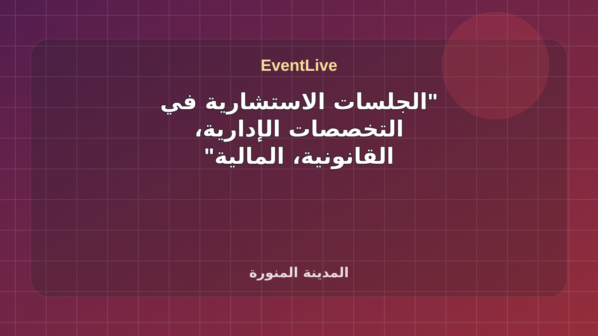
يسر غرفة المدينة المنورة ممثلةً بلجنة المهن الاستشارية دعوتكم لحضور جلسات استشارية بعنوان: "الجلسات الاستشارية في التخصصات الإدارية، القانونية، المالية" وذلك ضمن مبادرات اللجان القطاعية الموجهة لخدمة قطاعات الأعمال الأربعاء 11\2\2026 م 6 :00 مساءً غ رفة المدينة المنورة راب ط التسجيل: https://survey.porsline.com/s/GN5UABHU
تفاصيل الحضور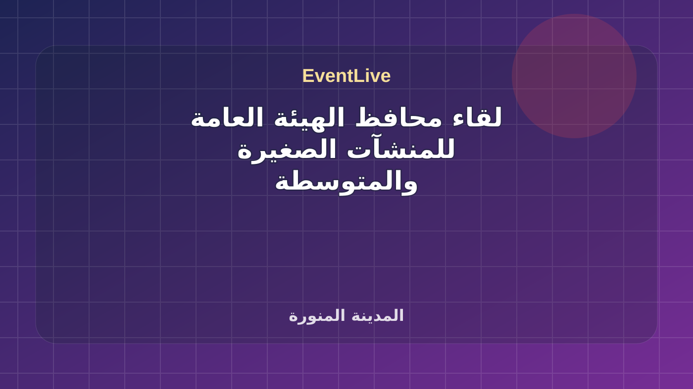
يسر الهيئة العامة للمنشآت الصغيرة والمتوسطة بالتعاون مع غرفة المدينة المنورة دعوتكم لحضور لقاء مفتوح يجمع محافظ الهيئة العامة للمنشآت الصغيرة والمتوسطة الأستاذ سامي بن إبراهيم الحسيني مع رواد ورائدات الأعمال في منطقة المدينة المنورة الإثنين 9\02\ 2026 م 7 :30 مساءً غر فة المدينة المنورة راب ط التسجيل: https://survey.porsline.com/s/rGOqtfwu
تفاصيل الحضور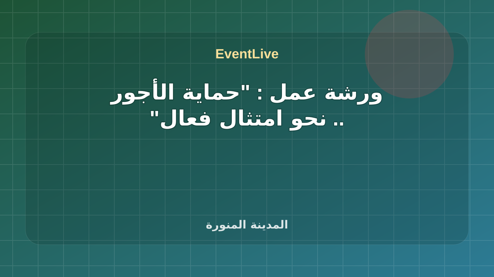
يدعوكم اتحاد الغرف السعودية بالتعاون مع غرفة المدينة المنورة لحضور ورشة عمل بعنوان: "حماية الأجور .. نحو امتثال فعال" وذلك بتاريخ 8 فبراير. انضموا إلينا عبر مسح الرمز.
تفاصيل الحضور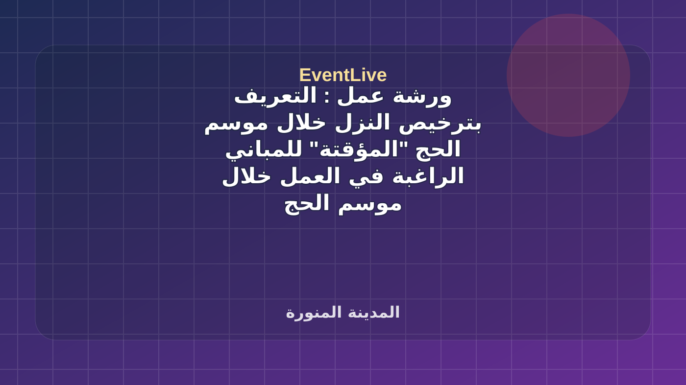
يسر غرفة المدينة المنورة بالتعاون مع وزارة السياحة دعوتكم لحضور ورشة عمل بعنوان: التعريف بترخيص النزل خلال موسم الحج "المؤقتة" للمباني الراغبة في العمل خلال موسم الحج يوم الاثنين 26 يناير 2026م ا لساعة 1:00 مساءً مق ر غرفة المدينة المنورة رابط التسجيل: https://survey.porsline.com/s/URJhNYsm
تفاصيل الحضورهذه الروابط تتحدث مع كل بناء وتعرض الفعاليات القادمة والجارية لهذا السياق فقط.